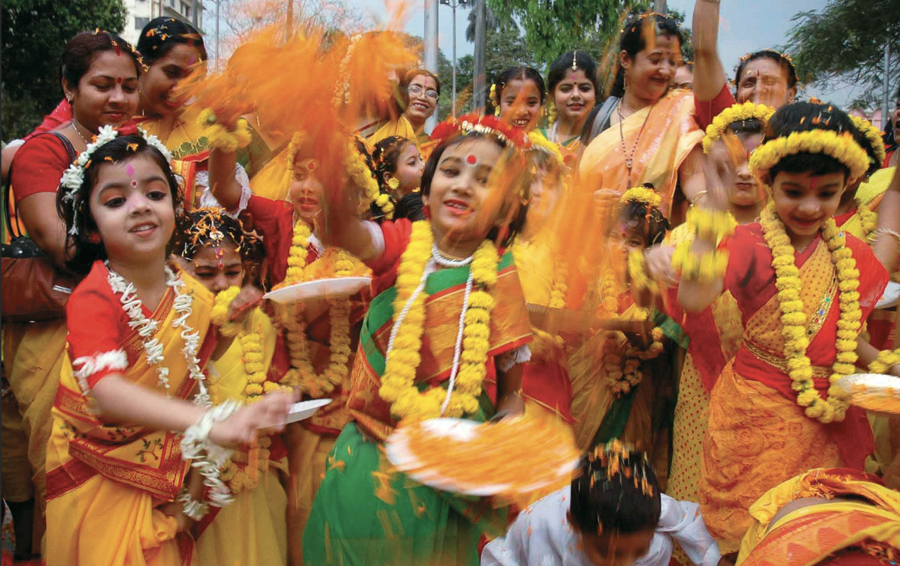
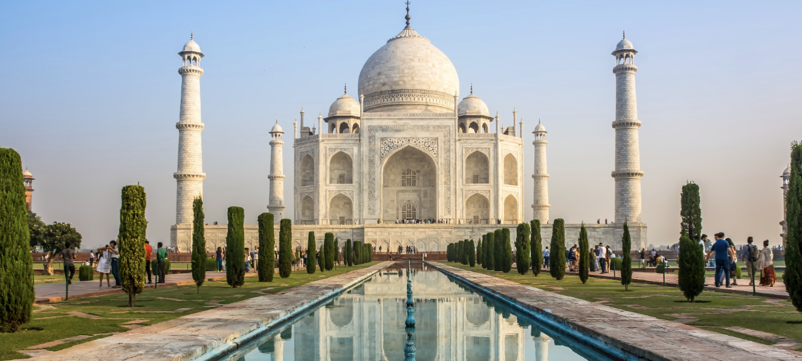

My Culture
My culture is Indian, and it is an important part of who I am. Indian culture is rich in traditions, values, and celebrations that have been passed down through generations. Family is very important in Indian culture, and we respect our elders and stay close to our relatives. Food is also a big part of our culture, with many delicious dishes that use different spices and flavours. We celebrate many festivals throughout the year, such as Diwali and Holi, which bring families and communities together. These celebrations include special foods, prayers, music, and colourful decorations. Being part of Indian culture makes me feel proud because it teaches me strong values, respect for others, and the importance of staying connected to my traditions.
Indian Foods
Indian food is a very important part of Indian culture and traditions. It is
known around the world for its rich flavours, colourful dishes, and the use of many different spices
such as turmeric, cumin, and coriander. Many Indian meals include foods like Butter Chicken, Biryani,
Samosa, and Naan. These foods are often shared with family and friends, especially during special
gatherings and celebrations. Indian meals are usually full of flavour and can be spicy, savoury, and
very satisfying.
Indian culture is also famous for its wide variety of sweets and desserts that are enjoyed during
festivals, weddings, and religious celebrations. Popular Indian sweets include Gulab Jamun, Jalebi,
Ladoo, and Barfi. These sweets are often made using ingredients such as milk, sugar, ghee, flour,
and nuts, which give them a rich and sweet taste. Many families make these sweets at home, while
others buy them from sweet shops during big celebrations. Sharing food and sweets is a way of
showing love, happiness, and hospitality in Indian culture, and it helps bring people together
during important moments.
Indian Festivals
Festivals are a very important part of Indian culture because they bring
people together to celebrate traditions, religion, and happiness. Throughout the year, many
different festivals are celebrated by families and communities. One of the most popular festivals
is Diwali, which is known as the Festival of Lights. During Diwali, people clean and decorate their homes with
colourful lights, candles, and small oil lamps called diyas. Families also pray together, exchange gifts, and
share many sweets and delicious foods. Fireworks are often used at night to celebrate the joy and victory of good
over evil.
Another well-known festival is Holi, which is called the Festival of Colours. During Holi, people gather with
friends and family and throw bright coloured powder and water at each other. It is a very fun and exciting
festival where everyone laughs, dances, listens to music, and enjoys special foods and drinks. Holi represents
happiness, unity, and the arrival of spring.
There are also other important celebrations such as Navratri, which is celebrated over nine nights
with traditional dancing, music, and prayers. Many people perform cultural dances and wear colourful
traditional clothing during this time. Festivals in Indian culture are not only about celebrations,
but they are also a way to keep traditions alive, strengthen family bonds, and bring communities
together. These festivals create joyful memories and remind people of their cultural values and
beliefs.
Indian Values
Family values are a very important part of Indian culture and play a big role in everyday
life. In many Indian families, people are taught to respect their parents, grandparents, and
elders. Elders are often looked up to for their wisdom and guidance, and younger family members
are expected to listen to and care for them. Family members usually support each other during
both happy and difficult times, which helps keep strong relationships within the family. It is
also common for extended families, such as cousins, uncles, and grandparents, to stay very
close and spend a lot of time together.
In Indian culture, families often come together for special occasions like festivals,
weddings, and religious celebrations. During festivals such as Diwali and Holi, families
gather to pray, eat traditional foods, and celebrate their culture. Many traditions and
cultural values are passed down from one generation to the next through family. These strong
family values teach people the importance of love, respect, responsibility, and helping one
another, which helps keep Indian culture strong and meaningful.
Why I Like Indian Traditions
I like Indian traditions because they are meaningful and bring people closer together. Indian
traditions teach important values such as respect, kindness, and the importance of family. Many
traditions are connected to celebrations, prayers, and spending time with loved ones, which makes
them very special. Festivals like Diwali and Holi are great examples of how traditions bring joy and
excitement to people's lives. During these celebrations, families come together to decorate their
homes, share delicious food and sweets, and enjoy each other's company.
I also like Indian traditions because they help keep our culture alive and remind us of where we
come from. Traditions such as wearing traditional clothing, respecting elders, and celebrating
festivals help people stay connected to their heritage. They also create many happy memories with
family and friends. For me, Indian traditions are special because they show the importance of
unity, happiness, and strong cultural values.


